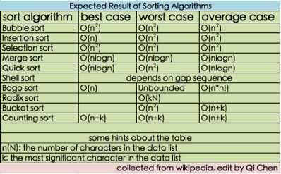
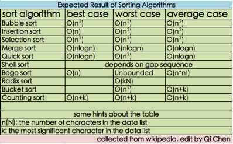

.
Basic Sorting Efficiency of Various Algorithms
Efficiency of Sorting Algorithms
Basic Sorting Efficiency of Various Algorithms
Best Case
"Best Case" refers to the circumstance in which the specific algorithm is most suited to quickly solving the array based on how the array is sorted when it is input into the algorithm. Typically best case is the most efficient an algorithm can be.
Average Case
"Average Case" refers to the efficiency that is most common in reference to the given sorting algorithm. Basically with any given array of values this can be the expected efficiency of the algorithm.
Worst Case
Worst Case is the opposite of Best Case, and as such is given when a sorting algorithm is least well suited to sorting the given input array.